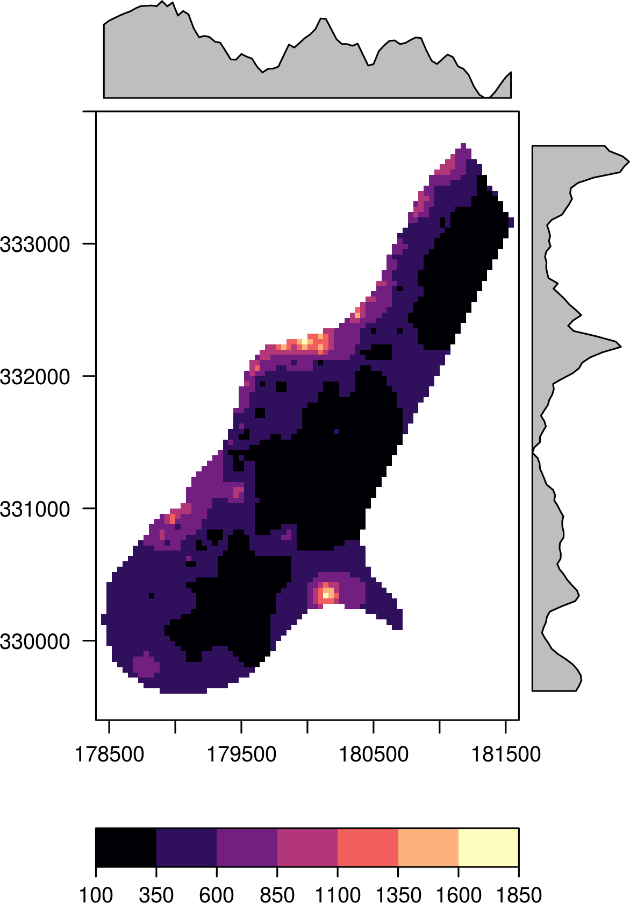
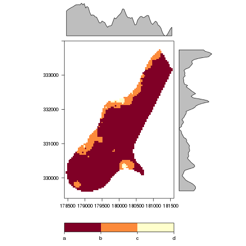
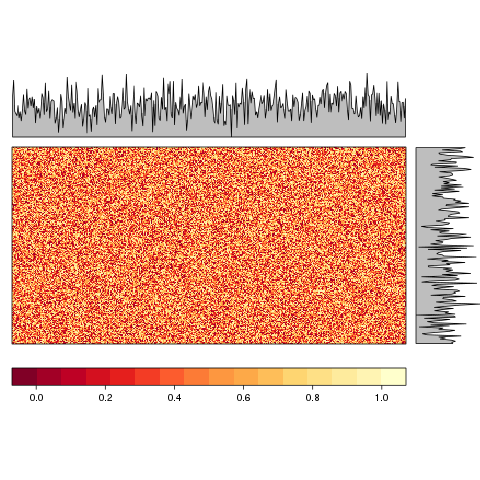
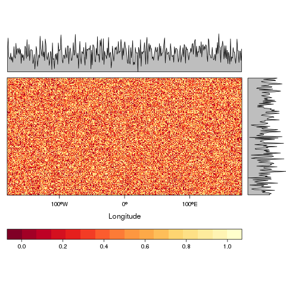
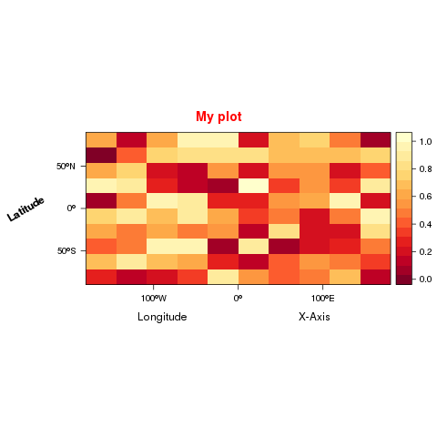
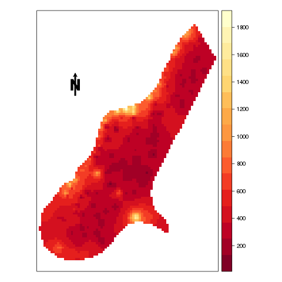
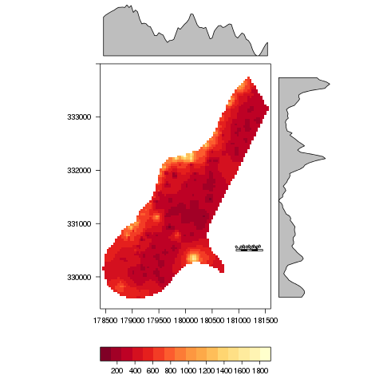
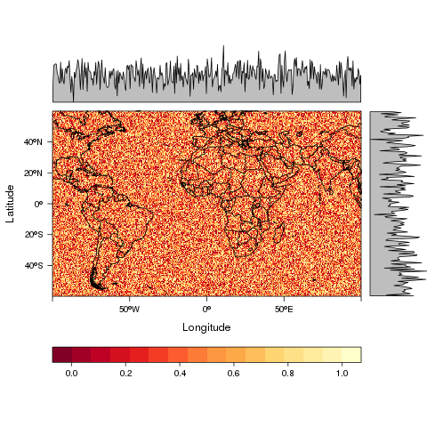
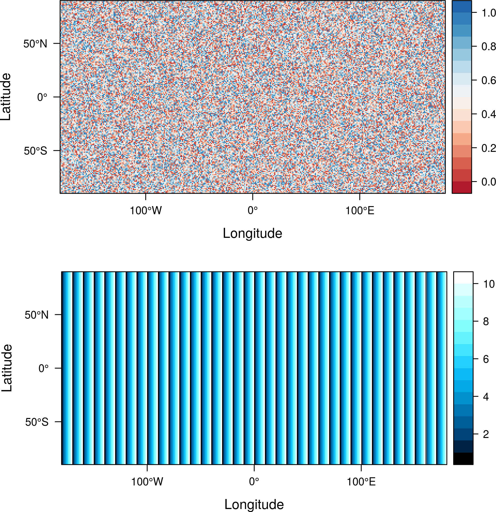
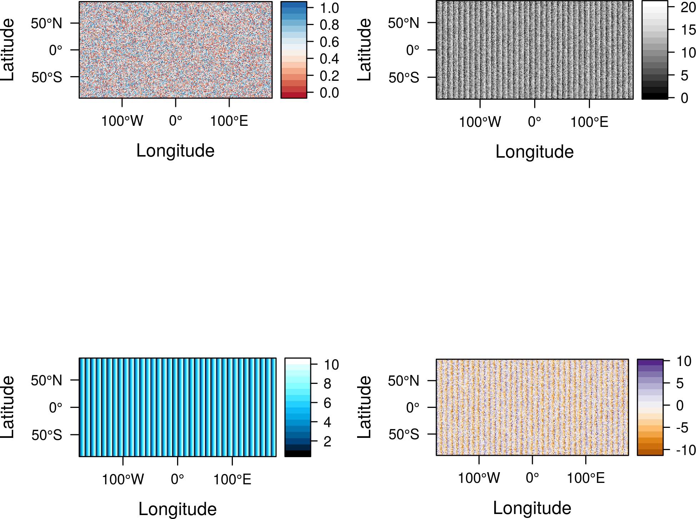

FAQs
Table of Contents
- How to define the breaks
- How to suppress axis labels and ticks
- How to rotate the axis label or use a different color
- How to plot a geographical subset of a raster
- How to add an arrow
- How to add an scale
- How to overlay a shapefile
- How to print several Rasters with different legends in the same page
- How to label each panel with a different label from the layer name
How to define the breaks
Use the at argument to define the breaks.
f <- system.file("external/test.grd", package="raster")
r <- raster(f)
my.at <- seq(100, 1850, 500)
levelplot(r, at=my.at)
Moreover, if you want to define where the labels are located
define the components of colorkey:
myColorkey <- list(at=my.at, ## where the colors change
labels=list(
at=my.at ## where to print labels
))
levelplot(r, at=my.at, colorkey=myColorkey)

Last, you can even define the contents of the labels:
myColorkey <- list(at=my.at, ## where the colors change
labels=list(
labels=letters[seq_along(my.at)], ## labels
at=my.at ## where to print labels
))
levelplot(r, at=my.at, colorkey=myColorkey)

How to suppress axis labels and ticks
Use xlab=NULL, ylab=NULL and draw=FALSE inside scale.
r <- raster() r <- init(r, runif) levelplot(r, xlab=NULL, ylab=NULL, scales=list(draw=FALSE))

levelplot(r, xlab=NULL, scales=list(x=list(draw=FALSE)))

levelplot(r, ylab=NULL, scales=list(y=list(draw=FALSE)))

How to rotate the axis label or use a different color
Define main, xlab and ylab as vectors or lists with
arguments to be passed to grid::gpar.
r <- raster(nrow=10, ncol=10)
r[] <- runif(100)
levelplot(r, margin=FALSE,
main=list('My plot', col='red'),
xlab=c('Longitude', 'X-Axis'),
ylab=list('Latitude', rot=30, fontface='bold')
)

How to plot a geographical subset of a raster
Use xlim and ylim
r <- raster(nrow=10, ncol=10) r[] = 1:10 levelplot(r, xlim=c(-100, 100), ylim=c(-50, 50))

How to add an arrow
Use sp::layout.north.arrow with latticeExtra::layer.
f <- system.file("external/test.grd", package="raster")
r <- raster(f)
levelplot(r, margin=FALSE, auto.key=FALSE, scales=list(draw=FALSE)) +
layer({
SpatialPolygonsRescale(layout.north.arrow(),
offset = c(179000,332500),
scale = 400)
})

How to add an scale
Use grid.rect, grid.text and latticeExtra::layer.
f <- system.file("external/test.grd", package="raster")
r <- raster(f)
levelplot(r) +
layer({
xs <- seq(181000, 181400, by=100)
grid.rect(x=xs, y=330500,
width=100, height=30,
gp=gpar(fill=rep(c('transparent', 'black'), 2)),
default.units='native')
grid.text(x= xs - 50, y=330560, seq(0, 400, by=100),
gp=gpar(cex=0.5), rot=30,
default.units='native')
})

How to overlay a shapefile
Several layers can be combined using the +.trellis and layer
functions from the latticeExtra package (which is automatically
loaded with rasterVis).
library(raster) library(rasterVis)
Let’s build some data to play. You can skip this part if you already have a raster file and a shapefile.
library(maps)
library(mapdata)
library(maptools)
## raster
myRaster <- raster(xmn=-100, xmx=100, ymn=-60, ymx=60)
myRaster <- init(myRaster, runif)
## polygon shapefile
ext <- as.vector(extent(myRaster))
boundaries <- map('worldHires', fill=TRUE,
xlim=ext[1:2], ylim=ext[3:4],
plot=FALSE)
## read the map2SpatialPolygons help page for details
IDs <- sapply(strsplit(boundaries$names, ":"), function(x) x[1])
bPols <- map2SpatialPolygons(boundaries, IDs=IDs,
proj4string=CRS(projection(myRaster)))
The polygons are printed with sp::sp.polygons using +.trellis and
layer to display them over the result of levelplot.
levelplot(myRaster) + layer(sp.polygons(bPols))

Read the help page of sp.polygons for detailed information about its
options.
How to print several Rasters with different legends in the same page
Use print.trellis and its argument split.
For two different RasterLayer.
r <- r2 <- raster() r[] <- runif(ncell(r)) r2[] <- 1:10 p <- levelplot(r, par.settings=RdBuTheme(), margin=FALSE) p2 <- levelplot(r2, par.settings=BTCTheme(), margin=FALSE) print(p, split=c(1, 1, 1, 2), more=TRUE) print(p2, split=c(1, 2, 1, 2))

A more sophisticated solution to print more than two layers.
s <- stack(r, r2, 10*r+r2, 10*r-r2)
nl <- nlayers(s)
m <- matrix(1:nl, nrow=2)
themes <- list(RdBuTheme(), BTCTheme(), GrTheme(), PuOrTheme())
for (i in 1:nl){
p <- levelplot(s, layers=i,
par.settings=themes[[i]],
margin=FALSE)
print(p, split=c(col(m)[i], row(m)[i], ncol(m), nrow(m)), more=(i<nl))
}

How to label each panel with a different label from the layer name
Use names.attr.
r <- raster(nrow=10, ncol=10)
r[] <- runif(100)
s <- stack(lapply(1:8, function(i)r))
levelplot(s, scales=list(draw=FALSE), colorkey=FALSE,
par.settings=GrTheme(),
names.attr=paste0('MNF-', 1:8))